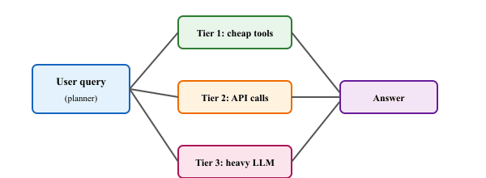

"The agent with 50 tools and no taste is just a database with a chatbot in front of it. The agent with five tools and a budget is engineering."
Frontier, Cache Savvy AI Agent
This section continues from Section 27.6, which covered the cost anatomy of a tool call, token-efficient calling patterns, caching, parallel execution and dependency graphs, the economic value equation, and tool-efficiency benchmarks. Here we turn from measurement to design: the four production patterns for orchestrating tools at scale (tool tiers, speculative execution, tool composition, budget-constrained execution), the open research frontier (MCP standardization, prompt injection through tool outputs), and a hands-on lab that combines TransformerLens activation patching with DSPy structured reasoning to illustrate the "right tool for the right job" principle.
Prerequisites
This section continues from Section 27.6. Familiarity with the cost-anatomy, caching, parallel execution, and efficiency-metric material covered there is assumed.
Early ChatGPT plug-in deployments produced a now-famous failure pattern: the model would confidently invent an arithmetic answer in prose while the calculator tool sat idle, fully wired up and ready. The cause was usually a system prompt that mentioned the tool too late, after the model had already committed to a chain-of-thought. The fix, surfacing tool availability near the top of the context, has since become standard tool-orchestration hygiene.

27.6.7 Design Patterns for Production Tool Orchestration
Several patterns have emerged for managing tools at scale in production systems.
Pattern 1: Tool Tiers
Organize tools into tiers based on cost and reliability. Tier 1 (local, fast, free): calculations, string manipulation, cached data. Tier 2 (moderate cost, moderate latency): database queries, internal APIs. Tier 3 (expensive, slow): web search, third-party APIs, compute-intensive operations. The agent should prefer lower tiers when possible, escalating to higher tiers only when lower-tier tools are insufficient.
Pattern 2: Speculative Execution
When the model is likely to need a tool result but has not yet decided, speculatively execute the tool call in parallel with the model's reasoning. If the model ends up needing the result, it is already available (zero additional latency). If the model does not need it, the speculative call is discarded. This pattern trades compute cost for latency reduction and is most effective when tool calls are cheap but slow.
Pattern 3: Tool Composition
Rather than exposing many fine-grained tools, compose them into higher-level tools that perform common multi-step operations in a single call. For example, instead of exposing separate "search," "fetch_page," and "extract_text" tools, expose a single "research" tool that performs all three steps internally. This reduces the number of LLM round-trips and eliminates the token overhead of intermediate tool calls.
Pattern 4: Budget-Constrained Execution
Set explicit budgets for tool use per task: maximum number of calls, maximum tokens, maximum latency, maximum monetary cost. The agent must operate within these constraints, prioritizing the most valuable calls when the budget is tight. This prevents runaway costs from agent loops that make excessive tool calls.
Anthropic's Computer Use (released October 2024) is a tool-economy agent in production. The Claude model picks from a small typed registry: screenshot, left_click, type_text, scroll, and key_press. Each tool has a strict JSON schema enforced by the API; the agent typically chains 10 to 30 calls to finish a desktop task. Anthropic published the full system prompt and tool definitions in the API documentation, making it the most-cited public reference for production tool-economy designs and the model used by Replit Agent, Cursor's "background agents," and Devin's iterations in 2025-2026.
Instrument your agent's tool calls from day one. Log every tool call with its name, arguments, response size, latency, and whether the result was used in the final answer. This telemetry data is essential for identifying optimization opportunities: which tools are called most frequently? Which calls are cacheable? Which calls are made unnecessarily? The monitoring patterns from Section 42.1 apply directly to tool call observability.
Standardization and open research problems
Tool use protocols are the connective tissue of agentic AI, and 2024-2026 has produced both rapid standardization and open research questions. Anthropic's Model Context Protocol (MCP, 2024-2025) emerged as the de-facto standard for connecting models to tools and data sources, but the protocol does not specify how to do safe tool selection at scale. Toolformer (Schick et al., arXiv:2302.04761) and ToolLLM (Qin et al., arXiv:2307.16789) demonstrated self-supervised tool selection; recent work pushes toward retrieval-augmented tool catalogs that scale to thousands of MCP servers.
Two open research problems dominate 2025-2026. First, prompt injection through tool outputs: when an agent reads untrusted content (web pages, emails), how do you prevent that content from rewriting the agent's plan? See Greshake et al. (arXiv:2302.12173) and 2024-2025 follow-ups on tool-output sandboxing. Second, structured outputs and reliability: constrained decoding plus JSON-schema enforcement is now standard, but multi-turn tool-use error recovery (when a tool returns an unexpected error) remains brittle and is the focus of active benchmark work like tau-bench (Yao et al., 2024).
Future directions for tool orchestration
- Learned tool selection. Rather than relying on heuristics or keyword matching for tool routing, training models specifically for tool selection using reinforcement learning from tool outcomes.
- Tool markets. As the ecosystem of available tools grows (MCP servers, API marketplaces, plugin ecosystems), agents will need to discover, evaluate, and select tools from large catalogs at runtime.
- Automated tool creation. Agents that can create their own tools (writing and deploying functions as needed) rather than being limited to a predefined tool set.
- Cross-agent tool sharing. In multi-agent systems, one agent's tool results can be shared with other agents, avoiding redundant calls.
27.6a Lab: Combining Interpretability and Structured Reasoning
Objective
Use TransformerLens to inspect attention patterns inside GPT-2, apply activation patching to identify computational circuits responsible for specific behaviors, and then use DSPy to build a structured reasoning pipeline. By the end, you will have a working toolkit that connects mechanistic interpretability with programmatic reasoning, reinforcing the Right Tool pattern: choose the tool that fits the analysis task rather than forcing a single framework to do everything.
Skills Practiced
- Loading and probing transformer internals with TransformerLens
- Visualizing attention heads and identifying induction circuits
- Performing activation patching to localize model behavior to specific layers and heads
- Building structured reasoning chains with DSPy signatures and modules
- Connecting interpretability findings to reasoning pipeline design
Prerequisites
- Familiarity with transformer architecture from Chapter 3
- Python environment with GPU access (Colab free tier is sufficient for GPT-2)
- Basic understanding of interpretability concepts from Chapter 10
Steps
- Step 1: Load GPT-2 via TransformerLens.
# pip install transformer-lens dspy-ai matplotlib numpy torch from transformer_lens import HookedTransformer model = HookedTransformer.from_pretrained("gpt2-small") print(f"Layers: {model.cfg.n_layers}, Heads: {model.cfg.n_heads}")Code Fragment 27.6a.1: Environment setup and model loading. - Step 2: Visualize attention patterns and scan for previous-token heads.
import numpy as np prompt = "When Mary and John went to the store, John gave a drink to" tokens = model.to_tokens(prompt) logits, cache = model.run_with_cache(tokens) for layer in range(model.cfg.n_layers): for head in range(model.cfg.n_heads): pattern = cache["pattern", layer][0, head].detach().cpu().numpy() prev_attn = np.mean([pattern[i, i-1] for i in range(1, pattern.shape[0])]) if prev_attn > 0.3: print(f" L{layer}H{head}: prev-token attn = {prev_attn:.3f}")L0H7: prev-token attn = 0.412 L1H4: prev-token attn = 0.358 L4H11: prev-token attn = 0.331
Code Fragment 27.6a.2: Extract attention patterns and identify heads that strongly attend to the immediately preceding token. - Step 3: Activation patching to identify circuits. Replace each head's output with its clean-run value when processing a corrupted prompt, then measure how much the target logit difference recovers. Heads with high recovery are causally responsible for the behavior.
import torch clean, corrupt = ("When Mary and John went to the store, John gave a drink to", "When Mary and Bob went to the store, John gave a drink to") clean_t, corr_t = model.to_tokens(clean), model.to_tokens(corrupt) _, clean_cache = model.run_with_cache(clean_t) mary_id = model.to_single_token(" Mary") john_id = model.to_single_token(" John") results = torch.zeros(model.cfg.n_layers, model.cfg.n_heads) for layer in range(model.cfg.n_layers): for head in range(model.cfg.n_heads): def patch(v, hook, l=layer, h=head): v[0, :, h, :] = clean_cache[hook.name][0, :, h, :] return v pl = model.run_with_hooks(corr_t, fwd_hooks=[(f"blocks.{layer}.attn.hook_result", patch)]) results[layer, head] = (pl[0, -1, mary_id] - pl[0, -1, john_id]).item()Code Fragment 27.6a.3: Activation patching to localize the indirect-object-identification circuit. The heads with the largest logit-diff recovery are the causally important ones. - Step 4: DSPy structured reasoning pipeline. Use DSPy to turn the raw patching numbers into a testable hypothesis and a follow-up experiment, demonstrating the Right Tool pattern: TransformerLens for probing, DSPy for orchestrating multi-step LLM reasoning.
import dspy dspy.configure(lm=dspy.LM("openai/gpt-4o-mini")) class AnalyzeCircuit(dspy.Signature): """Given activation-patching findings, hypothesize the circuit's function.""" patching_results: str = dspy.InputField() task_description: str = dspy.InputField() hypothesis: str = dspy.OutputField() next_experiment: str = dspy.OutputField() analyzer = dspy.ChainOfThought(AnalyzeCircuit) out = analyzer( patching_results="Top heads: L9H9 +1.85, L9H6 +1.52, L10H0 +1.29 (promote Mary)", task_description="Indirect object identification: predict 'Mary' from 'John gave a drink to'", ) print("Hypothesis:", out.hypothesis) print("Next experiment:", out.next_experiment)Output: Hypothesis: Layer 9-10 heads form an indirect-object-identification name-mover circuit; they copy the "Mary" token from its earlier position to the final prediction position. Next experiment: Test with novel name pairs (Alice/Bob) to verify generalization.Code Fragment 27.6a.4: DSPy ChainOfThought turning raw activation-patching numbers into a testable hypothesis and a follow-up experiment.
Extensions
- Repeat the patching experiment on GPT-2-medium to see whether the same heads are responsible at larger scale, or whether the circuit migrates to different layers.
- Use TransformerLens logit attribution to decompose the final prediction into per-head contributions and compare with the patching results.
- Extend the DSPy pipeline to take the suggested next experiment, run it automatically via TransformerLens hooks, and feed the results back into a second reasoning step (a closed-loop interpretability agent).
- Four production patterns govern tool orchestration at scale: tool tiers, speculative execution, tool composition, and budget-constrained execution.
- The MCP standard solves transport for tool integration but does not solve safe tool selection at scale; retrieval-augmented tool catalogs are the active research front.
- Prompt injection through tool outputs is the open security problem of 2025-2026; the mitigation surface is tool-output sandboxing and constrained decoding on agent plans.
- The "Right Tool" pattern applies recursively: use TransformerLens for low-level probing, DSPy for multi-step structured reasoning, and don't try to make one framework do both.
Show Answer
When tool calls are cheap (per call) but slow (high latency relative to reasoning), and the probability of needing the result is high enough to justify the wasted compute on rejected results. The pattern trades compute cost for latency reduction.
Show Answer
Composed (higher-level) tools eliminate intermediate LLM round-trips and the token overhead of multiple tool-call/result cycles. A single "research" tool that internally chains search, fetch, and extract is cheaper than three separate calls with the model in the loop between each.
What Comes Next
This concludes the tool-economy thread of Chapter 27: Tool Use, Function Calling & Protocols. The next chapter, Chapter 28: Multi-Agent Systems, extends these orchestration patterns from one agent with many tools to many agents that coordinate.